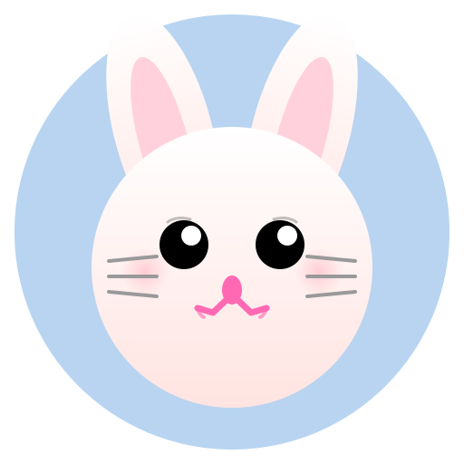

🐰 可爱小兔子图片转换器
192x192 小兔子
512x512 小兔子

📝 使用说明：
- 点击上方对应的"下载 PNG"按钮
- 将下载的
logo192.png 和 logo512.png 文件保存到本地
- 将这两个文件复制到项目的
public 文件夹，替换原有的文件
- 刷新浏览器即可看到新的小兔子图标 🐰
💡 提示： 这两个可爱的小兔子图片是粉色系设计，带有爱心装饰，非常适合作为应用的图标。如果您希望调整颜色或样式，可以编辑 rabbit192.svg 和 rabbit512.svg 文件。